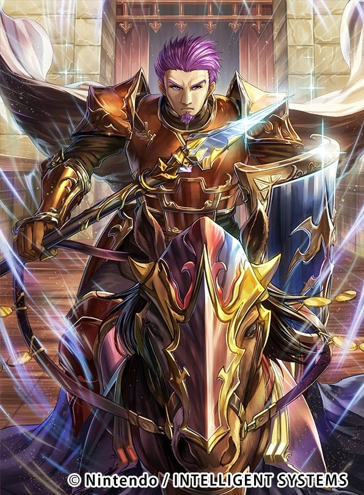

Équipe d'Eliwood
Eliwood

Classe de base: Lord
Marcus
Classe de base: Paladin
Kent
Classe de base: Cavalier
Wallace
Classe de base: Paladin
Classe de base: Lord
Classe de base: Paladin
Classe de base: Cavalier
Classe de base: Paladin